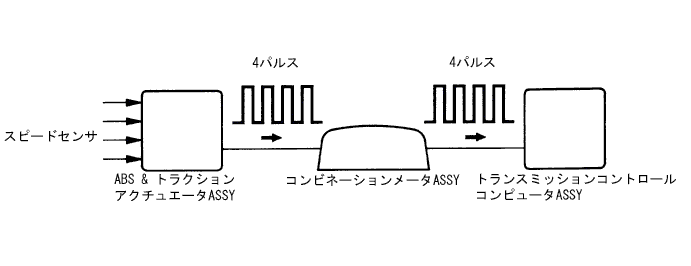
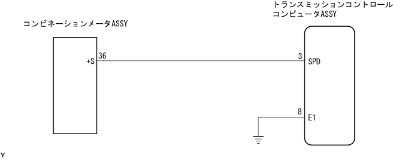
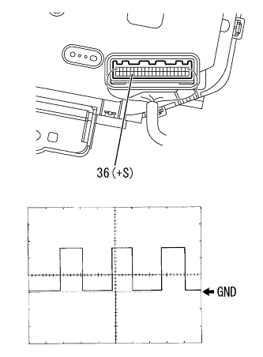
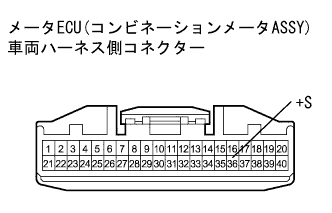
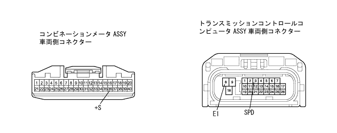

DTC P0500/42 Vehicle Speed Sensor Circuit |

| DTC No. SAE/TCCS | DTC Detection Conditions 1. Diagnosis conditions 2. Malfunction status 3. Malfunction duration 4. Other | Inspection Area |
|---|---|---|
| P0500/42 |
|
|

| Step 1 | Read TaSCAN Data (Vehicle Speed) |
Check that the speedometer operates normally.
Connect SST (TaSCAN) to DLC3.
Perform a road test of the vehicle.
Following the SST (TaSCAN) screen display, read the Data List item [Vehicle Speed] from [Diagnosis Function Menu] → [ECU Data Monitor].
|
| ||||
| OK | ||
| ||
| Step 2 | Inspect Combination Meter Assembly (Vehicle Speed Pulse Signal Inspection) |
 |
Connect SST (TaSCAN) to DLC3.
Connect the SST (TaSCAN) between terminal 36 (+S) of the combination meter assembly connector and body ground.
Set the SST (TaSCAN) to the oscilloscope function.
Check the waveform while driving.
| Item | Description |
|---|---|
| Measurement Terminal | 36 (+S) - Body ground |
| Tool Setting | 2V/DIV、20ms/DIV |
| Measurement Condition | Driving at approximately 20km/h |
| Result | Proceed to |
|---|---|
| Waveform as shown in the illustration is not displayed | A |
| Waveform as shown in the illustration is displayed | B |
|
| ||||
| A | |
| Step 3 | Inspect Combination Meter Assembly (Terminal Voltage Inspection) |
 |
Disconnect the combination meter assembly connector.
Turn IG ON.
Using SST (Toyota electrical tester), measure the voltage between the terminals.
| Tester Connection (Terminal Symbol) | Condition | Standard |
|---|---|---|
| 36 (+S) - Body ground | IG ON | 4.5 to 5.5V (11 to 14V) |
|
| ||||
| OK | ||
| ||
| Step 4 | Inspect Wire Harness and Connector (Transmission Control Computer - Combination Meter Assembly) |
ReferenceDisconnect the transmission control computer connector and the combination meter assembly connector.

Using SST (Toyota electrical tester), measure the resistance between the terminals.
| Tester Connection (Terminal Symbol) | Condition | Standard |
|---|---|---|
| 3(SPD) - 36(+S) | Always | Below 1 Ω |
| Tester Connection (Terminal Symbol) | Condition | Standard |
|---|---|---|
| 3 (SPD) and 36 (+S) - Other terminals or body ground | Always | 10k Ω or higher |
|
| ||||
| OK | |
| Step 5 | Replace Transmission Control Computer Assembly |
Replace the transmission control computer assembly. (see)
| NEXT | ||
| ||